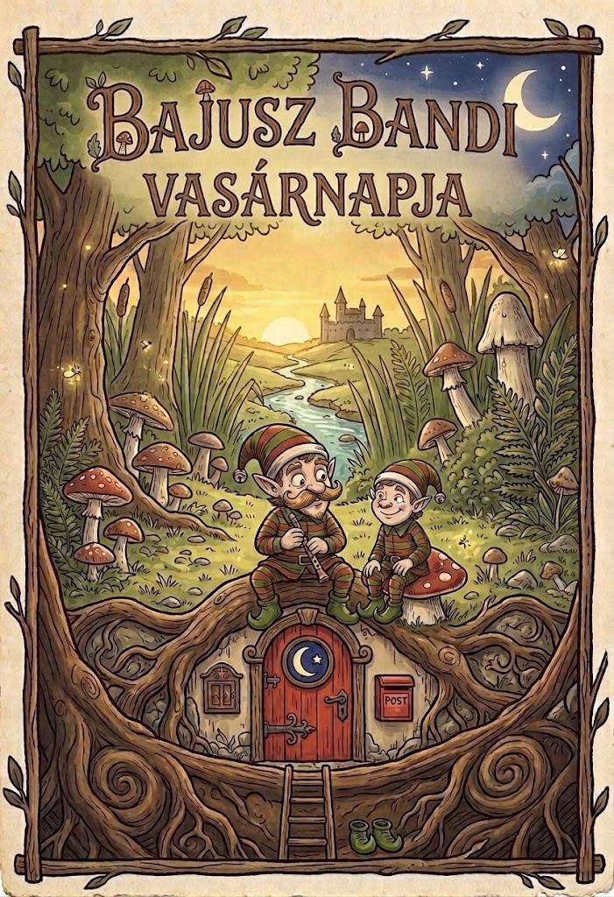
Mese egy kedves manóról, aki a fal mögött lakik
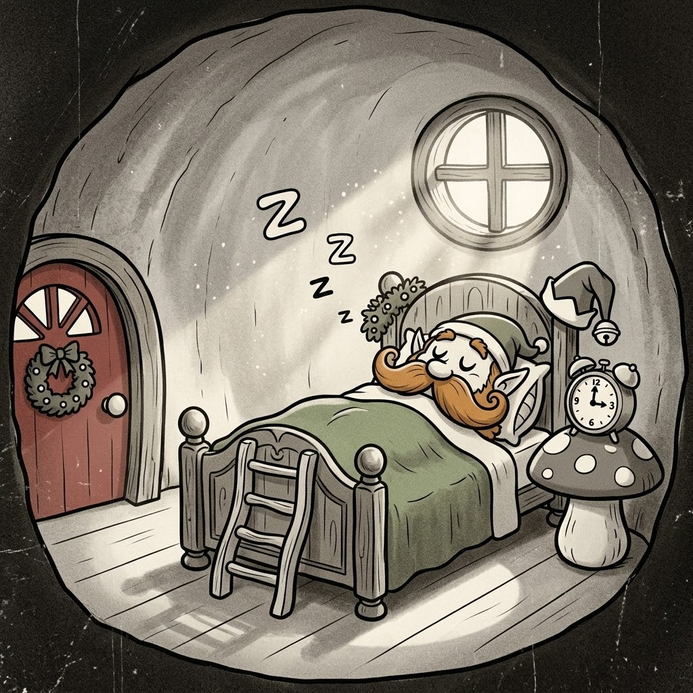
A ház falában, egészen a kislány szobája mellett, lakik egy pici piros ajtó mögött Bajusz Bandi, a manó. Vasárnap reggel a gombaóra hármat csilingelt, mire Bandi résnyire nyitotta a szemét.
– Horgászni való idő van! – dünnyögte álmosan, és jó nagyot nyújtózott, mielőtt megpödörte hosszú, vörös bajuszát.
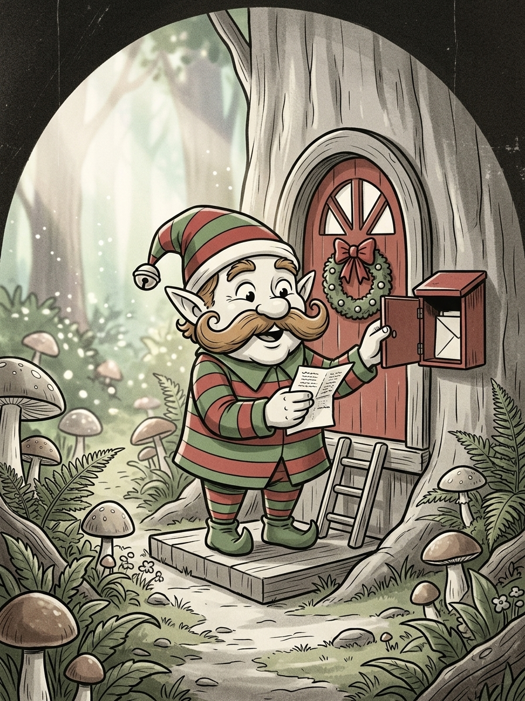
Bandi felhúzta csíkos zöld-piros ruháját és zöld csizmáját, majd kimászott a piros ajtón. A postaládában egy pici levél várta: „Gyere horgászni a patakhoz! Ölel: Anti.”
Bandi elmosolyodott – Anti volt a testvére, és minden vasárnap együtt horgásztak.
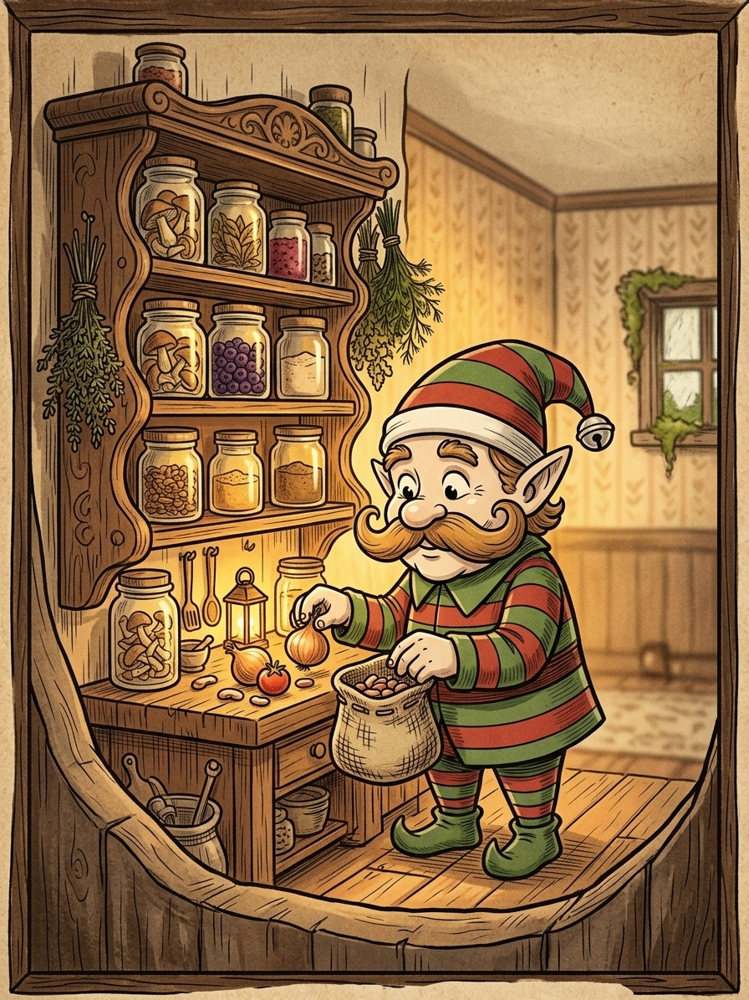
Útközben benézett a konyhájába, ami a nappali falában rejtőzött. Bekötött egy kis tarisznyát néhány szem babbal, egy csipetnyi hagymával és egy apró paradicsommal.
Hiszen a bab volt a kedvenc étele, és ez jó elemózsia egy hosszú délelőttre.
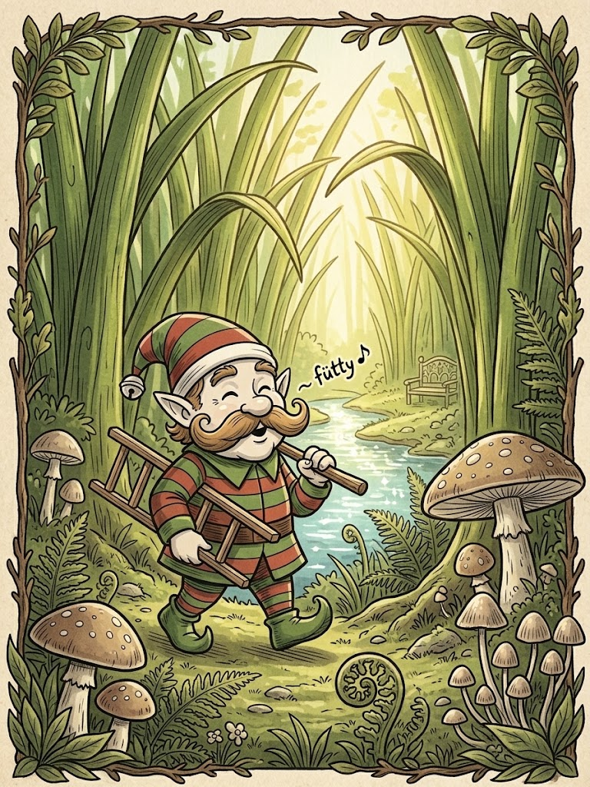
Egy pici résen át kibújt a kertbe, ahol a fűszálak magasabbak voltak nála, mint a fák. Letette a kis fa létráját, majd fütyörészve vágott neki az ösvénynek.
Az ösvény egyenesen a csillogó patakhoz vezetett.
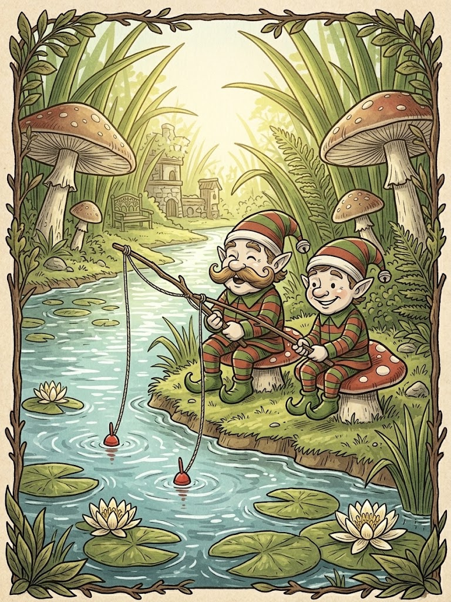
A patak partján Anti már várta, kezében egy vékony gallyból és cérnából font horgászbottal. – Szia, Bandi! Jó fogást! – kiáltotta, és összekoccantották a horgászbotjaikat, ahogy máskor a poharaikat szokták.
Leültek egy-egy puha gombára, és bedobták a horgot.
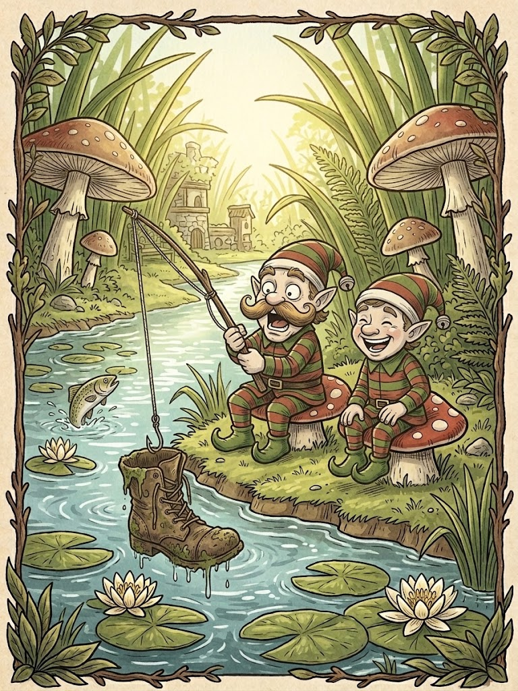
Sokáig csendben ültek, csak a víz csobogott. Egyszer csak Bandi bottja meghajlott! Izgatottan húzta be a zsinórt – de csak egy régi, elhagyott kis csizma akadt rá.
Mindketten úgy nevettek, hogy majdnem legurultak a gombáról.
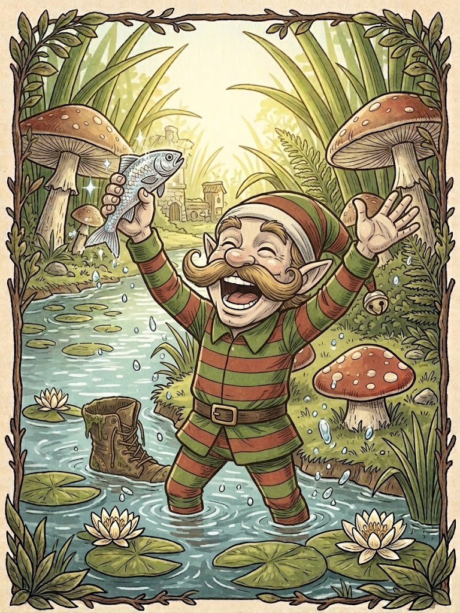
Nem sokkal később Anti bottja is megrándult, aztán újra Bandié. Ezúttal valami apró és csillogó villant a víz alatt: egy icipici ezüstös hal!
– Fogtam egyet! Fogtam egyet! – ugrált örömében Bandi, a bajusza is vidáman táncolt.
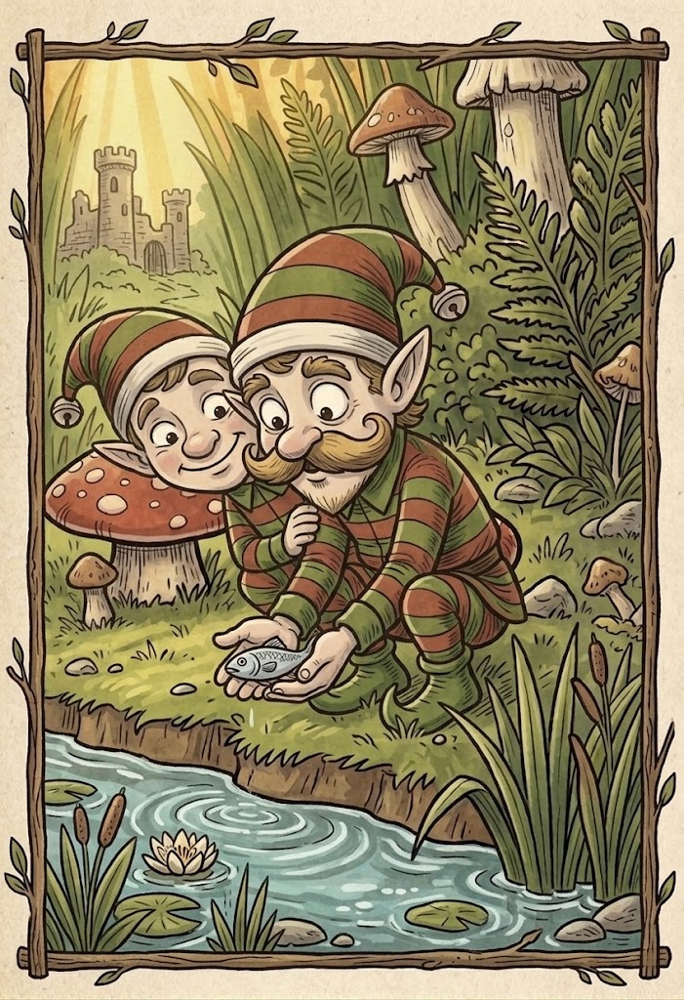
A kis hal ijedten csapkodott a tenyerében. Bandi elnézte egy pillanatig, aztán Antira nézett. – Szerintem inkább hazavárja a családja – mondta, és óvatosan visszaengedte a halacskát a patakba.
A hal boldogan úszott tovább, Bandi szíve pedig ettől lett igazán elégedett.
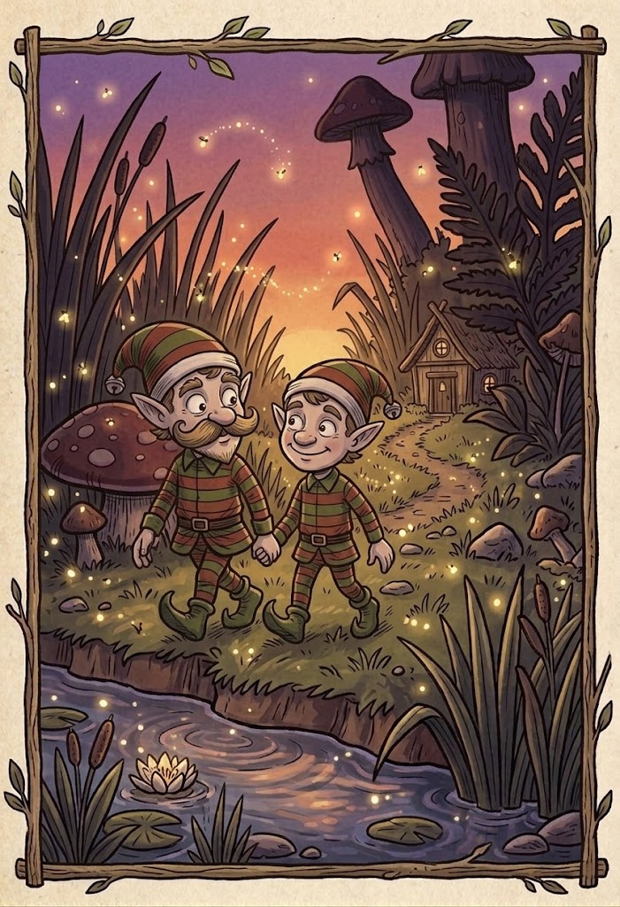
Ahogy a nap lassan lebukott a fűszálak mögött, a testvérek elindultak hazafelé. Szentjánosbogarak gyulladtak ki köröttük, mint apró lámpások.
A fénybogarak mutatták az utat egészen a piros ajtóig.
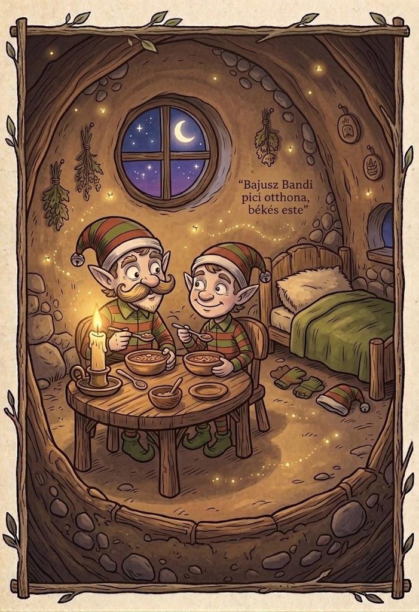
Otthon Bandi babot főzött hagymával és paradicsommal, és Anti is vele vacsorázott. Jóllakottan, elégedetten dőlt be az ágyába, a kislány szobája melletti falban.
– Jó éjszakát, kedves olvasó, neked is! – suttogta még Bandi, mielőtt lehunyta a szemét.
Vége